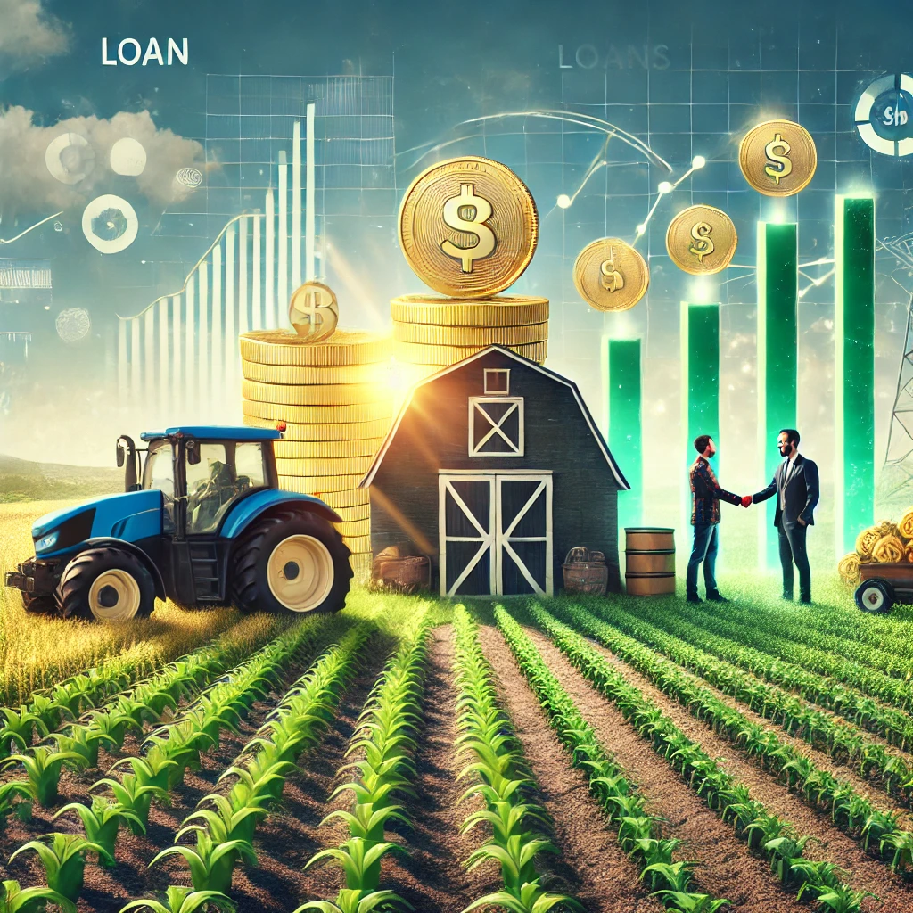
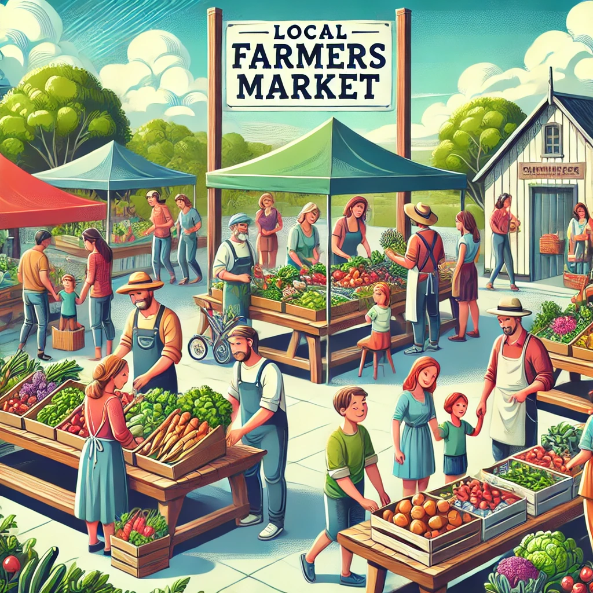

Project 1: Elderly and Disabled Care Services
This project focuses on providing comprehensive care services for the elderly, disabled persons, and daycare facilities, ensuring their well-being and quality of life.
Goals
- Offer personalized care plans tailored to individual needs.
- Provide a safe and nurturing environment for the elderly and disabled.
- Enhance the quality of life through professional and compassionate care.
Technologies Used
- React for the front-end development.
- Node.js for the back-end development.
- MongoDB for the database management.
- Twilio for communication and notifications.
- Stripe for payment processing.
Challenges Faced
- Ensuring the safety and well-being of all individuals under care.
- Implementing a user-friendly interface for caregivers and families.
- Managing and coordinating care schedules efficiently.
Impact
- Improved quality of life for the elderly and disabled individuals.
- Peace of mind for families knowing their loved ones are well cared for.
- Enhanced support and resources for caregivers.
Project 2: Leidma API Management
This project focuses on developing a comprehensive API management platform for Leidma, enabling efficient API creation, deployment, and monitoring.
Goals
- Provide a user-friendly interface for API creation and deployment.
- Ensure secure and scalable API management.
- Enable real-time monitoring and analytics for APIs.
Technologies Used
- Vue.js for the front-end development.
- Node.js for the back-end development.
- MySQL for the database management.
- OAuth 2.0 for secure API authentication.
- Grafana for real-time monitoring and analytics.
Challenges Faced
- Ensuring the platform is intuitive and easy to use for developers.
- Implementing robust security measures for API access.
- Handling large volumes of API requests efficiently.
Impact
- Streamlined API development and deployment processes.
- Enhanced security and scalability for APIs.
- Improved visibility and control over API performance.
Project 3: Farm Growth and Loan Assistance
This project is designed to help farmers expand their farm sizes and provide them with necessary loans to support their agricultural activities.
Goals
- Assist farmers in expanding their farm sizes through financial support.
- Provide accessible loan options tailored for farmers.
- Enhance agricultural productivity and sustainability.
Technologies Used
- Angular for the front-end development.
- Express.js for the back-end development.
- PostgreSQL for the database management.
- PayPal API for the loan disbursement and repayment integration.
- Twilio for SMS notifications and reminders.
Challenges Faced
- Ensuring the loan application process is simple and user-friendly.
- Implementing a secure and efficient loan disbursement system.
- Managing loan repayment schedules and reminders.
Impact
- Increased farm sizes and productivity for farmers.
- Improved financial stability for farmers through accessible loans.
- Enhanced agricultural output and sustainability.
Project 4: Connecting Farmers and Consumers
This project aims to connect local farmers with consumers directly, allowing for fresh produce delivery and supporting local agriculture.
Goals
- Provide a platform for local farmers to sell their produce directly to consumers.
- Ensure consumers have access to fresh, locally-sourced food.
- Support local agriculture and reduce food miles.
Technologies Used
- React for the front-end development.
- Node.js for the back-end development.
- MongoDB for the database management.
- Stripe for the payment gateway integration.
- Socket.io for real-time chat functionality.
Challenges Faced
- Ensuring a user-friendly interface for both farmers and consumers.
- Implementing a secure and reliable payment system.
- Managing real-time communication between users.
Impact
- Increased sales for local farmers by providing a direct sales channel.
- Improved access to fresh produce for consumers.
- Strengthened the local economy by supporting small-scale farmers.